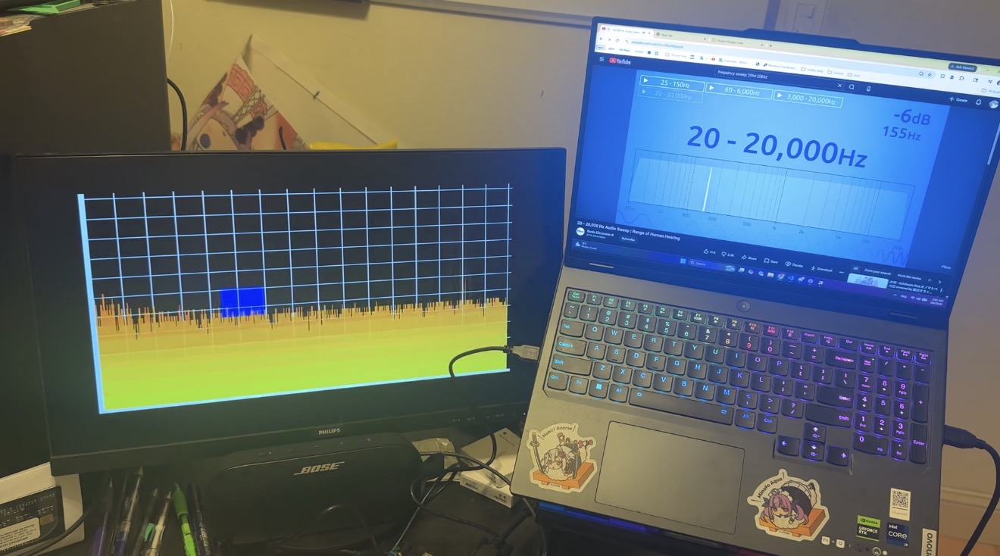

Hardware-Accelerated Audio Spectrum Analyzer
I developed a Verilog audio-processing pipeline for my Digital Systems Design and Synthesis course. The system connects 24-bit I2S capture, fixed-point signal processing, FFT analysis, and a 60 Hz VGA display to visualize audio frequency content.
Course project- CAPTURE
- 24-bit I2S
- PROCESSING
- 3-stage fixed-point DSP + FFT
- DISPLAY
- 60 Hz VGA
- TIMELINE
- Nov 2025 — May 2026

The problem
As part of a final project in my Digital Systems Design and Synthesis course, we were tasked with creating a device that uses an FPGA. We designed a hardware-accelerated audio spectrum analyzer that captures audio from its surroundings, processes the data through several stages on an FPGA, and displays the results on a VGA monitor. This project challenged me to integrate multiple digital systems, learn about real-time signal processing, and implement these concepts in Verilog.
The design
The design integrates 24-bit I2S capture, a three-stage fixed-point DSP pipeline, FFT-based frequency analysis, and VGA output. Each stage has a distinct responsibility: capture makes the incoming audio available digitally, signal processing prepares and transforms that information, and the visualization gives the frequency content a visible representation. The project connects these stages to create a functional audio spectrum analyzer.
The outcome
The completed project demonstrates a working hardware-accelerated audio spectrum analyzer that captures, processes, and visualizes audio frequency content in real time. Integrating multiple digital systems and implementing the design in Verilog provided valuable experience in hardware design and verification.